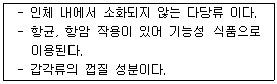
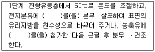
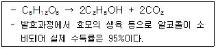
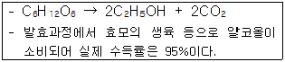

식품기사 (2012-03-04 기출문제)
1과목: 식품위생학
1. 파상열에 대한 설명으로 틀린 것은?
- Brucella속이 원인균이다.
- 원인균은 열에 대한 저항성이 강하다.
- 특이한 발열이 주기적으로 반복된다.
- 소, 돼지, 염소 등으로부터 감염된다.
(정답률: 73%)

2. 버섯류의 독성분이 아닌 것은?
- muscarine
- phaline
- amygdalin
- amanitatoxin
(정답률: 81%)
3. 식품을 저온 보존한 경우 어패류의 신선도 유지기간이 짧았다면 그 원인균으로 가장 가능성이 높은 것은?
- 호기성세균
- 호냉세균
- 호염세균
- 혐기성세균
(정답률: 85%)
4. 유전자 재조합 식품의 안전성 평가를 위한 일반적인 조사에 해당하지 않는 것은?
- 건강에 직접적 영향(독성)
- 유전자 재조합에 의해 만들어진 영향 효과
- 유전자 도입 전 식품의 안전성
- 알레르기 반응을 일으키는 영향
(정답률: 80%)
5. 다음 중 차아염소산나트륨 소독 시 비해리형 차아염소산(HCLO)으로 존재하는 양(%)이 가장 많을 때의 pH는?
- pH 4.0
- pH 6.0
- pH 8.0
- pH 10.0
(정답률: 80%)
6. 고무제 기구 및 용기 포장의 용출시험 시 대상물질이 아닌 것은?
- 납
- 증발잔류물
- 페놀
- 비소
(정답률: 40%)
7. 식품위생심의위원회가 조사ㆍ심의하는 사항이 아닌 것은?
- 식품 및 식품첨가물과 그 원재료에 대한 시험ㆍ검사 업무
- 식중독 방지에 관한 사항
- 식품등의 기준과 규격에 관한 사항
- 농약ㆍ중금속 등 유독ㆍ유해불질 잔류 허용 기준에 관한 사항
(정답률: 49%)
8. 히스티딘을 탈탄산 반응에 의해 히스타민으로 만들 수 있는 세균은?
- Proteus morganii, E. coli
- Bacillus cereus, E. coli
- Proteus morganii, Bacillus cereus
- Cl. septicum, A. aerogemes
(정답률: 46%)
9. 바다생선회를 원인식으로 발생한 식중독 환자를 조사한 결과 기생충의 자충이 원인이라면 관련이 깊은 것은?
- 선모충
- 동양모양선충
- 간흡충
- 아나사키스충
(정답률: 84%)
10. 인수공통감염병과 그 병원체의 연결이 틀린 것은?
- 유행성출혈열 : 세균
- 돈단독 : 세균
- 광견병 : 바이러스
- 일본뇌염 : 바이러스
(정답률: 59%)
11. 석탄산계수에 대한 설명으로 옳은 것은?
- 소독제의 분자량을 석탄산의 분자량으로 나눈 값이다.
- 소독제의 독성을 석탄산의 독성 1로 하여 비교한 값이다.
- 석탄산과 동일한 살균력을 보이는 소독제의 희석도를 석탄산의 희석도로 나눈 값이다.
- 각종 미생물을 사멸시키는데 요하는 석탄산의 농도 값이다.
(정답률: 83%)
12. 각 위생처리제와 그 특징이 잘못 연결된 것은?
- Hyposhlorite - 사용범위가 넓음
- Quats - Gram 음성균에 효과적임
- Iodophors - 비부식성이고 피부 자극이 적음
- Acid anionics - 증식세포에 넓게 작용함
(정답률: 57%)
13. 식약청은 모조치즈와 가공치즈, 치즈믹스를 사용하면서 100% 자연산치즈만 사용한 것처럼 허위표시 하여 판매한 업체를 식품위생법위반 혐의로 검찰에 불구속 송치했다. 이사건과 관련된 용어의 정의가 틀린 것은?
- 자연치즈 : 우유를 주원료로 응고, 발효한 것
- 치즈믹스 : 피자 토핑피즈에 모조피즈가 혼합된것
- 가공치즈 : 모조치즈에 식품첨가물을 가해 유화시켜 가공한 것
- 모조치즈 : 식용유 등에 식품첨가물을 가해 치즈와 유사하게 만든 것
(정답률: 77%)
14. 기구 및 용기ㆍ포장의 일반기준으로 틀린 것은?
- 전분, 글리세린이 식품과 접촉하는 면에 접착되어 있는 용기ㆍ포장에 대해서는 증발잔류물 규격만 적용된다.
- 식품과 접촉하는 부분에 사용하는 도금용 주석은 납을 0.1%이상 함유하여서는 아니된다.
- 물리적 또는 화학적으로 내용물이 오염되기 쉬운 구조 이어서는 아니된다.
- 기구의 수리에 사용하는 땜납은 납을 0.1% 이상 함유하여서는 아니된다.
(정답률: 64%)
15. 식품첨가물이 갖추어야 할 조건이 아닌 것은?
- 식품의 영양가를 유지할 것
- 식품의 상품가치를 향상시킬 것
- 화학명과 제조방법이 명확할 것
- 식품목적에 따라 다량의 첨가가 가능한 것
(정답률: 83%)
16. 폴리염화바이페닐(PCB)이 환경 오염물로서 특히 문제가 되어 있는 것은 화학물질로서의 어느 특성에 의한 것인가?
- 이산화성
- 난연성
- 소수성
- 난분해성
(정답률: 80%)
17. 장기보존식품의 기준 및 규격상 통ㆍ병조림식품 중 보통 90℃이하로 살균처리할 수 있는 기준은?
- 저산성 식품으로 pH 4.6 이상의 것
- 산성식품으로 pH 4.6 미만인 것
- 제조 시 관 또는 병 뚜껑이 팽창 또는 변형되지 아니한 것
- 호열성 세균이 증식할 우려가 없는 식품
(정답률: 50%)
18. 10KGy 이하의 방사선 조사가 식품에 미치는 영향에 대한 설명으로 옳은 것은?
- 단백질, 탄수화물, 지방과 같은 거대분자 영양물질은 비교적 안정하다.
- 방사선 조사에 의한 무기질 변화가 많다.
- 식품의 관능적 품질에 상당한 영향을 준다.
- 모든 병원균을 완전히 사멸시킨다.
(정답률: 67%)
19. 병원성세균 중 포자를 생성하는 균은?
- 바실러스 세레우스(Bacillus cereus)
- 병원성대장균(Escherichia coli 0157:H7)
- 황색포도상구균(Staphylococcus aureus)
- 비브리오 파라해모리티쿠스(Vibrio parahaemolyticus)
(정답률: 62%)
20. 탄저에 대한 설명으로 틀린 것은?
- 원인균은 그람양의 혐기성 간균이다.
- 급성의 열성 전염병이다.
- 장탄저, 폐탄저, 피부탄저가 있다.
- 혈액으로 균이 침입하여 패혈증으로 사망한다.
(정답률: 61%)
2과목: 식품화학
21. 결합수에 대한 설명이 아닌 것은?
- 용질에 대하여 용매로서 작용하지 않는다.
- 수증기압이 자유수보다 낮다.
- 0℃에서는 얼지 않는다.
- 4℃일 때 밀도가 가장 크다.
(정답률: 61%)
22. 가공식품의 효소에 의한 갈변반응을 억제하는 방법 중 가장 실제적이고 효과적인 것은? ?
- 가공 및 저장 시 산소를 제거하는 방법
- 가공 전에 가열에 의한 효소의 불활성화
- 가공식품 중의 폴리페놀등의 기질의 제거
- 가공식품에 아스코르빈산을 첨가
(정답률: 62%)
23. 메밀전분을 갈아서 만든 유동성이 있는 액체성 물질을 가열하고 난 뒤 냉각하였더니 반고체 상태(묵)가 되었다. 이묵의 교질 상태는?
- gel
- sol
- 염석
- 유화
(정답률: 83%)
24. 콜로이드(colloid) 입자가 가지는 성질이 아닌 것은?
- 반투성
- 흡착
- 브라운(brown)운동
- 삼투압
(정답률: 66%)
25. 단백질의 겔 강도에 영향을 미치는 요소 중 그 정도가 가장 작은 것은?
- 단백질의 침강계수와 확산속도
- 단백질 그물망구조에서의 가교결합수
- 단백질의 분자량
- 단백질의 3차구조 표면의 카르복실기 수와 염의 농다
(정답률: 61%)
26. 식품의 분산계에 대한 설명중 틀린 것은?
- 분산질이 기체이고 분산매가 액체인 식품상태를 거품(foam)이라 한다.
- 분산질이 액체이고 분산매가 액체면서 서로 섞이지 않는 식품상태를 유화(emulsion)라 한다.
- 분산질이 고체이고 분산매가 기체인 식품의 상태를 에어로솔(aerosol)이라 한다.
- 분산질이 액체이고 분산매가 고체인 식품상태를 서스펜션(suspension)이라 한다.
(정답률: 46%)
27. 아스타크산틴(astaxanthin) 색소를 가장 많이 함유하고 있는 것은?
- 새우
- 대구
- 해삼
- 꽁치
(정답률: 82%)
28. 쓴맛 성분과 그 쓴맛을 감소시킬 수 있는 효소의 연결이 옳은 것은?
- 루플론(lupulone) - 파파인(papain)
- 탄닌(tannin) - 레닌(renin)
- 나린진(naringin) - 나린진나아제(maringinase)
- 카페인(caffein) - 셀룰라아제(cellulase)
(정답률: 76%)
29. 단백질의 변성을 이용한 것과 가장 거리가 먼 것은?
- 육류의 가열 조리
- 어류의 염장
- 두부제조
- 캐러멜화
(정답률: 65%)
30. 유화제 분자 내의 친수기와 소수기의 균형을 나타내는 것은?
- HLB
- HPLC
- acetyl value
- Hener value
(정답률: 71%)
31. CuSO4의 알칼리 용액에 다음 당을 넣고 가열할 때 Cu2O의 붉은색 침전이 생기지 않는 당은?(오류 신고가 접수된 문제입니다. 반드시 정답과 해설을 확인하시기 바랍니다.)
- maltose
- sucrose
- lactose
- glucose
(정답률: 73%)
32. 비타민 A 효과가 없는 carotenoid는?
- B-carotene
- Cryptoxanthin
- a-carotene
- Lycopene
(정답률: 64%)
33. 식품을 과도하게 건조하였을 때 오히려 반응속도가 증가하는 화학반응은?
- 지방산화반응
- 마이얄 반응
- 비타민C 손실반응
- 효소적 가수분해 반응
(정답률: 61%)
34. 증류수에 녹인 비타민C를 정량하기 위해 분광광도계를 사용하였다. 분광광도계에서 나온 시료의 흡광도 결과와 비타민C 함량 사이의 관계를 구하기 위하여 이용하야 하는 것은?
- 람베르트-베르법칙(Lambert beer law)
- 페히너 공식(Fechner's law)
- 웨버의 법칙(Weber's law)
- 미켈리스-멘텐식(Michaelis-Menten's equation)
(정답률: 81%)
35. 결핵환자들의 경우 결핵균이 활동하지 못하도록 균을 석회화시키는데 이런 경우 유용할 것으로 예상되는 비타민은?
- 비타민C
- 비타민D
- 비타민E
- 비타민K
(정답률: 53%)
36. 소수성 아미노산인 L-leucine의 맛과 유사한 것은?
- 3.0% 포도당의 단맛
- 1.0% 소금의 짠맛
- 0.5% malic acid의 신맛
- 0.1% caffeine의 쓴맛
(정답률: 76%)
37. 식용유지의 자동산화 중 나타나는 변화가 아닌 것은?
- 과산화물가가 증가한다.
- 공액형 이중결합을 가진 화합물이 증가한다.
- 요오드가가 증가한다.
- 산가가 증가한다.
(정답률: 60%)
38. 가열 조리한 무의 단맛 성분은?
- allicin
- aspartame
- methyl mercaptan
- phyllodulcin
(정답률: 74%)
39. 갈락투로닉산(galacturonic acid)로 구성된 다당류는?
- inulin
- alginic acid
- pectic acid
- carrageenan
(정답률: 52%)
40. 유지 산패의 측정 방법이 아닌 것은?
- 과산화물값
- TBA 값
- 비누화 값 린
- 총 carbonyl 화합물 측정
(정답률: 74%)
3과목: 식품가공학
41. 냉매 중 폭발성이 없고, 냉동범위가 비교적 넓은 것은?
- 프레온
- 암모니아
- 메틸클로라이드
- 이산화황
(정답률: 79%)
42. 액체배지 또는 액체식품을 연속적으로 UHT또는 HTST증기 살균시키려고 한다. 다음 장치 중 어느 장치를 선택하여 사용하는가?
- plate type heat exchanger
- multi tuhetype heat exchanger
- coil type heat exchanger
- autoclave
(정답률: 46%)
43. 식품공학에서 사용하는 공식적인 국제 단위계는?
- SI단위
- CGS단위
- FPS단위
- Amecican단위
(정답률: 71%)
44. 도살 해체한 지육의 냉각에 대한 설명 중 틀린 것은?
- 냉각수 또는 작은 얼음조각을 뿌려 주어 온도를 10℃이하로 내린 후 15℃로 유지시켜 숙성과정을 돕는다.
- 냉장실의 온도는 0~10℃, 습도 80~90%를 유지한다.
- 냉동 시에는 -23~-16%의 저온동결을 시킨다.
- 저온동결실에서 72시간 유지한 후, 고기 표면에서 깊이 10cm의 위치 온도가 -20℃일 때가 식육의 냉동으로 적당하다.
(정답률: 49%)
45. 멸치젓 제조시 소금으로 절여 발효할 때 나타나는 현상이 아닌 것은?
- 과산화물가가 증가한다
- 가용성 질소가 증가한다.
- 맛이 좋아진다.
- 생균수가 15~20일 사이에 급격히 감소하다가 점차 증가한다.
(정답률: 71%)
46. 유지의 항산화제로 이용되는 비타민은?
- 비타민A
- 비타민E
- 비타민D
- 비타민F
(정답률: 78%)
47. 아래설명에 해당하는 성분은?

- 섬유소
- 펙틴
- 한천
- 키틴
(정답률: 83%)
48. 곡물의 도정 방법에서 건식도정과 습식도정 중 습식도정에만 해당되는 설명은?
- 겨와 배아가 배유로부터 분리된다
- 도정된 곡물의 저장성이 떨어진다.
- 배유로부터 전분과 단백질을 분리할 목적으로 사용될 수 있다.
- 쌀, 보리, 옥수수에 사용한다.
(정답률: 61%)
49. 가공품인 소시지, 햄 등이 가열 처리 후에도 갈색으로 변하지 않는데 그 주된 이유는?
- 축산 가공품 제조시 사용되는 인산염의 작용에 의해 nnitrosometmyoglobin으로 전환되기 때문이다.
- myoglobin 등의 성분이 아질산염 또는 질산염과 반응하여 nitrosomyoglobin으로 전환되기 때문이다.
- 훈연과정 중에 훈연성분과 반응하여 선홍색이 생성되기 때문이다.
- 근육성분인 myoglobin이 가열과정 중에 변색하여 melanoidin 색소를 만들기 때문이다.
(정답률: 77%)
50. 전분당 가공 방법 중 효소당화법의 특징에 해당하는 것은?
- 원하는 제품의 품질관리가 용이하다.
- 기계설비가 손상되기 쉽다.
- 분해율이 낮다
- 원하지 않는 부산물이 생성되기 쉽다.
(정답률: 53%)
51. 분리 대두단백(soy protein isolate)의 일반적인 제조 공정이 아닌 것은?
- 탈지 공정
- 가수분해 공정
- 불용성 고형분 분리공정
- 단백질응고 및 원심분리 공정
(정답률: 61%)
52. CA저장에 대한 설명 중 틀린 것은?
- 수확 후에도 호흡작용이 왕성한 과채류의 저장에 주로 이용된다.
- CR(climacteric cise)가 있는 과일이 CA저장에 유리하다.
- 환경기페의 산소분압이 높을수록 식품저장에 유리하다.
- 일반적으로 탄산가스의 분압은 2~10%정도가 CA저장에 적절하다.
(정답률: 67%)
53. 유지 원료에서 유지를 추출할 때 사용하는 용제는?
- hexane
- methyl alcohol
- touluene
- sulphuric acid
(정답률: 77%)
54. 과일잼의 가공 시 농축공정 중 농축률이 높아짐에 따라 온도가 고온으로 상승하는데, 고온으로 장시간 존재할 때 나타나는 변화가 아닌 것은?
- 방향성분이 휘발하여 이취를 낸다.
- 색소의 분해와 갈변반응을 일으켜 색의 저하를 가져온다.
- 설탕의 전화가 진행되어 엿 냄새가 감소한다.
- 펙틴의 분해에 의해 젤리화하는 힘이 감소된다.
(정답률: 76%)
55. 레시틴이 식품가공에 가장 많이 이용되는 용도는?
- 유화제
- 팽창제
- 삼투제
- 습윤제
(정답률: 82%)
56. 6×104개의 포자가 존재하는 통조림을 100℃에서 45분 살균하여 3개의 포자가 살아남아 있다면 100℃에서 D값은?
- 10.46분
- 5.46분
- 15.46분
- 20.46분
(정답률: 41%)
57. 건조식품에 있어 단분자층물(monomolecular layer of water)은 어떤 역할을 하는가?
- 미생물 발육 촉진
- 산화방지
- 식품변질의 촉진
- 미량금속의 촉매작용 촉진
(정답률: 67%)
58. 난백을 이용한 가공품 제조시 1000g의 난백이 필요하다면 껍질을 포함한 60g의 전란 몇 개가 필요한가?
- 약 16개
- 약 20개
- 약 24개
- 약 28개
(정답률: 45%)
59. 인스턴트 전지분유의 제조공정에서 ( )안에 들어갈 첨가물로 적합하지 않은 것은?

- lecithin
- Tween60
- Span 60
- lactose
(정답률: 58%)
60. 우유의 당에 해당하는 것은?
- sucrose
- maltose
- lactose
- gentiobiose
(정답률: 84%)
4과목: 식품미생물학
61. 효모를 분리하려고 할 때 배지의 pH로 가장 적합한것은?
- pH 2.0~3.0
- pH 4.0~6.0
- pH 7.8~8.0
- pH 10.0~12.0
(정답률: 72%)
62. 다음 발효공업 중 파아지(phage)에 의한 피해가 발생하지 않는 경우는?
- 낙농식품 발효
- 젖산(lactic acid) 발효
- 아세톤-부탄올(acetone-butanol) 발효
- 맥주 발효
(정답률: 71%)
63. 젖산균의 특성으로 틀린 것은?
- 내성포자를 형성한다.
- 색소를 생성하지 않는 간균 또는 구균이다.
- 포도당을 분해하여 젖산을 생성한다.
- 생합성 능력이 한정되어 영양 요구성이 까다롭다.
(정답률: 50%)
64. 미생물의 영양에 유기화합물이 없어도 생육하는 균이 아닌 것은?
- 독립영양균
- 종속영양균
- 무기영양균
- 광합성균
(정답률: 69%)
65. 간장 제조시 풍미에 관여하는 대표적인 내염성 젖산 세균은?
- Zyposaccharomyces rouxii
- Pediococcus halophilus
- Staphylococcus aureus
- Bacillus subtilis
(정답률: 38%)
66. 천자배양(stab culture)에 가장 적합한 것은?
- 호염성균의 배양
- 호열성균의 배양
- 호기성균의 배양
- 혐기성균의 배양
(정답률: 68%)
67. 세균의 생육곡선과 관계가 없는 용어는?
- 유도기(lag phase)
- 정지기(stationary phase)
- 산화기(oxidation phase)
- 대수기(logarithmic phase)
(정답률: 84%)
68. 일반적으로 미생물의 생육 최저 수분활성도가 높은 것부터 순서대로 나타낸 것은?
- 곰팡이>효모>세균
- 효모>곰팡이>세균
- 세균>효모>곰팡이
- 세균>곰팡이>효모
(정답률: 78%)
69. 세균의 세포에 기생해서 숙주 세균을 용균 시키는 것은?
- bacteriophage
- rickettsia
- vector
- plasmid
(정답률: 75%)
70. 통조림의 flat sour에대한 설명으로 틀린 것은
- 관은 정상이지만 내용물은 젖산 생성 때문에 신맛이 생성된다.
- 채소통조림이나 수산통조림 등 산도가 낮은 식품에서 주로 발생한다.
- 유포자 호열성세균에 의한 경우가 많다.
- 과도한 탄산가스 생성이 수반된다.
(정답률: 61%)
71. Bacillus속 세균에 대한 설명 중 틀린 것은?
- Bacillus 속은 혐기성 세균이다.
- Bacillus coagulans, Bacillus circulans는 병조림, 통조림 식품의 주요 부패균이다
- Bacillus natto는 청국정 제조에 사용된다.
- Endospore를 형성하는 세균으로서 강력한 α-amylase와 protease를 생성한다.
(정답률: 63%)
72. 대부분 무성생식을 하며 주로 출아법(Budding)에 의하여 증식하는 진균류로 빵, 맥주, 포도주 등을 만드는데 사용되는 것은?
- 세균(Bacteria)
- 곰팡이(Mold)
- 효모(Yeast)
- 바이러스(Virus)
(정답률: 83%)
73. 균사가 가근을 형성하고 표복지로 증식하는 곰팡이는?
- Mucor pusillus
- Aspergillus oryzae
- Monascus anka
- Rhizopus delemar
(정답률: 64%)
74. 왓슨(Watson)과 크릭(Crick)이 처음으로 발견한DNA의 구조는?
- 다중 나선구조
- 2중 나선구조
- 3중 나선구조
- 4차 입체구조
(정답률: 81%)
75. 미생물 배양용 고체배지의 최적 한천 농도는?
- 0.5~1%
- 1.5~2.0%
- 3.0~4.0%
- 5.0~7.0%
(정답률: 64%)
76. 김치숙성에 관여하지 않는 미생물은?
- Lactobaillus plantarum
- Leuconostoc mesenteroides
- Aspergillus oryzae
- Pediococcus pentosaceus
(정답률: 74%)
77. Torulopsis속과 다른 미생물의 비교 설명으로 틀린 것은?
- Candida속과 달리 위균사를 형성하지 않는다.
- Vibrio속과 달리 내염성이 약하다.
- Rhodotrula속과 달리 carotenoid 색소를 생성하지 않는다.
- Cryptococcus속과 달리 전분과 같은 물질을 만들지 못한다.
(정답률: 43%)
78. 단백질 합성과정에서 DNA를 주형으로 하여 mRNA를 합성하는 것을 무엇이라 하는가?
- 전사(transcription)
- 번역(translation)
- 복제(replication)
- 생합성(biosynthesis)
(정답률: 72%)
79. 그람음성세균의 세포벽을 구성하는 물질 중 내독소(endotoxin)라 부르는 독성 활성을 갖는 물질은?

- 펩티도글리칸(peptidoglycan)
- 테이코산(teichoic acid)
- 지질 A(lipid A)
- 포린(porin)
(정답률: 57%)
80. 초산 1000g을 제조하려면 이론적으로 약 몇 g의 에탄올이 필요한가?
- 1000g
- 667g
- 1304g
- 767g
(정답률: 32%)
5과목: 생화학 및 발효학
81. 알코올 발효시 당화 방법이 아닌 것은?
- 국법
- 맥아법
- amylo법
- yeast법
(정답률: 67%)
82. 일반적으로 아미노산의 발효 생산과 관계가 가장 적은 것은?
- 야생주를 이용하는 방법
- 영양요구변이주를 이용하는 방법
- 전구물질 첨가법
- 활성오니법
(정답률: 66%)
83. 발효공업에서 유용물질을 생산하는 수단으로 주로 미생물이 사용되는 이유가 아닌 것은?
- 미생물은 유일한 탄소원으로 저렴한 기질인 포도당을 이용한다.
- 미생물은 다른 생물체 세포에 비해 빠른 성장속도를 보인다.
- 미생물은 다양한 물질의 합성 및 분해능을 가지고 있다.
- 화학반응과 다르게 상온, 상압 등 온화한 조건에서 물질 생선이 가능하다.
(정답률: 57%)
84. 효소의 반응속도에 영향을 미치는 요소와 가장 거리가 먼 것은?
- 온도
- 수소이온농도
- 기질의 농도
- 반응액의 용량
(정답률: 74%)
85. 아미노산의 탈아미노 반응으로 유리된 NH3⁺의 일반적인 경로가 아닌 것은?
- α-keto acid와 결합하여 아미노산을 생성
- 해독작용의 하나로서 glutamine을 합성
- 간에서 요소회로를 거쳐 요소로 합성
- 간에서 당신생(gluconenesis) 과정을 거침
(정답률: 68%)
86. 효모에 의한 알코올 발효의 반응식과 조건이 아래와 같을때 포도당 1kg으로부터 생산되는 알코올의 양은?(단, 발효과정에서 효모의 생육 등으로 알코올이 소비되어 실제 수득률은 95%이다.)

- 약 440g
- 약 460g
- 약 486g
- 약 511g
(정답률: 50%)
87. glutamic acid 발효 생산균의 특징이 아닌 것은?
- Gram양성이다.
- 운동성이 있다
- Biotin 요구성이다.
- 포자를 형성하지 않는다.
(정답률: 42%)
88. EDTA(Ethylene Diamin Tetra Acetic Acid)처리에 의하여 효소가 불활성와되는 이유는?
- EDTA가 효소 peptide의 결합을 분해시키기 때문
- EDTA가 효소 단백질의 2차구조를 변화시키기 때문
- EDTA가 효소 단백질의 1차구조를 변화시키기 때문
- EDTA가 효소 활성부위의 금속이온과 결합하기 때문
(정답률: 69%)
89. 지방산의 β-산화과정이란?로 옳은 것은?
- 지방산의 -COOH 말단기로부터 두 개의 탄소 단위로 연속적으로 분해되어 아세틸-CoA를 생성
- 지방산의 비-COOH 말단기로부터 두 개의 탄소 단위로 연속적으로 분해되어 아세틸-CoA를 생성
- 지방산의 -COOH 말단기로부터 한 개의 탄소 단위로 연속적으로 분해되어 CO2를 생성
- 지방산의 비-COOH 말단기로부터 한 개의 탄소 단위로 연속적으로 분해되어 CO2를 생성
(정답률: 52%)
90. 비타민C 생산과 관계가 있는 것은?
- glycine 발효
- propionic acid 발효
- acetone - butanol 발효
- sorbose 발효
(정답률: 50%)
91. 표면배양법에 의해 생산되는 발효산물은?
- 구연산
- 젖산
- 초산
- 에탄올
(정답률: 34%)
92. 간에서 프로트롬빈을 비롯한 여러 가지 혈액응고인자를 합성하고 정상수준을 유지하기 위해 필요한 비타민은?
- 비타민 A
- 비타민 D
- 비타민 E
- 비타민 K
(정답률: 78%)
93. ATP가 고에너지 화합물인 이유는?
- ATP는 화학구조상 음전하가 몰려있고 여러 가지 공명체가 존재하므로 에너지를 많이 저장할 수 있기 때문이다.
- 탄수화물 대사에서 해당작용과 시트르산 회로를 통해 많이 생성되기 떄문이다.
- 열량을 많이 생산하는 지방의 산화에 의해 많이 생산되기 때문이다.
- 물과 작용하여 가수분해가 잘되기 때문이다.
(정답률: 66%)
94. 다음 중 TCA(Tri Carboxylic Acid) 회로상에서 생성되는 유기산이 아닌 것은?
- citric acid
- lactic acid이다.
- succinic acid
- malic acid
(정답률: 74%)
95. pyrimidine 유도체로서 핵산 중에 존재하지 않는 것은?(오류 신고가 접수된 문제입니다. 반드시 정답과 해설을 확인하시기 바랍니다.)
- cytosine
- uracil
- succinic acid
- adenine
(정답률: 49%)
96. 효소의 고정화 방법에 대한 설명으로 옳지 않는 것은?
- 담체결합법은 공유결합법, 이온결합법, 물리적 흡착법이 있다.
- 가교법은 2개 이상의 관능기를 가진 시약을 사용하는 방법이다.
- 포괄법에는 격자형과 클로스링킹형이 있다.
- 효소와 담체간의 결합이다.
(정답률: 59%)
97. 알코올 10% 수용액을 가열한 뒤 냉각하여 51%의 알코올 수용액이 생성되었을 때 증발계수는?
- 5.1
- 6.1
- 7.1
- 8.1
(정답률: 70%)
98. 당신생(gluconeogenesis)이라 함은 무엇을 의미하는가?
- 포도당이 혐기적으로 분해되는 과정
- 포도당이 젖산이나 아미노산 등으로부터 합성되는 과정
- 포도당이 산화되어 ATP를 합성하는 과정
- 포도당이 아미노산으로 전환되는 과정
(정답률: 66%)
99. 유기질의 혐기적 분해 시 발생하는 최종산물은?
- NH3
- CH4
- H2S
- SO2
(정답률: 48%)
100. C-C, C-S, C-0 등과 같은 결합을 형성하는 효소는?
- oxidoreductose
- kinase
- isomerase
- ligase
(정답률: 49%)